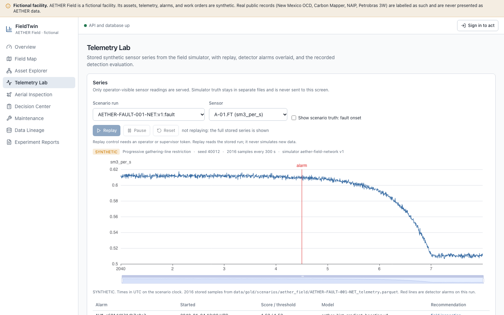
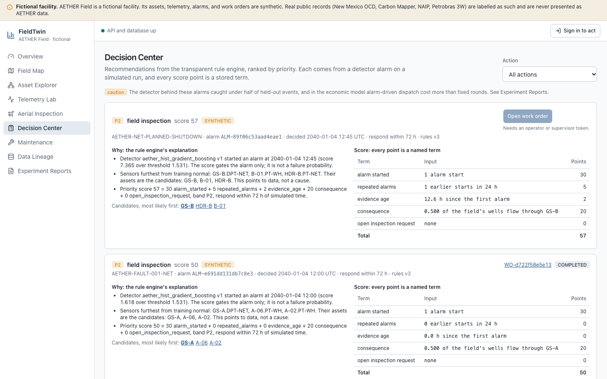
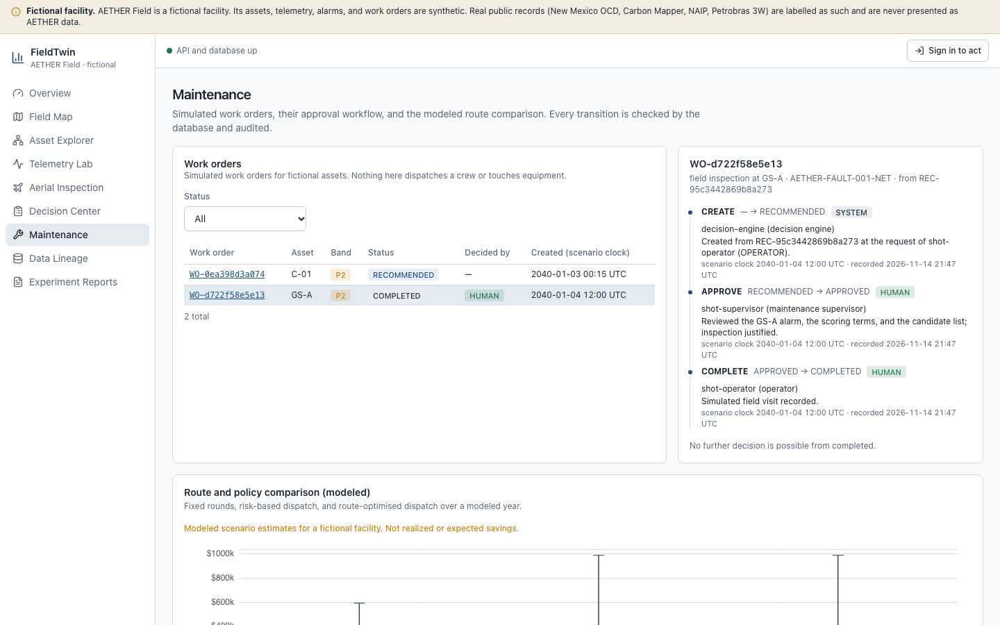
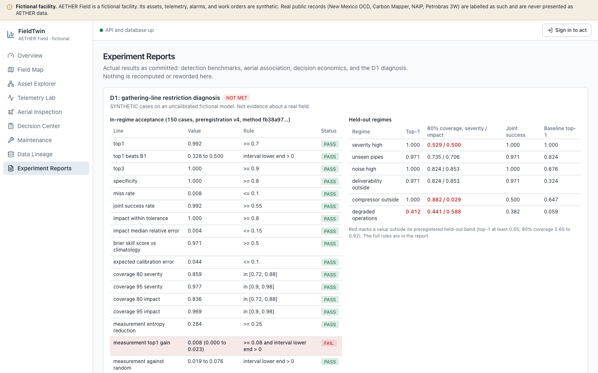
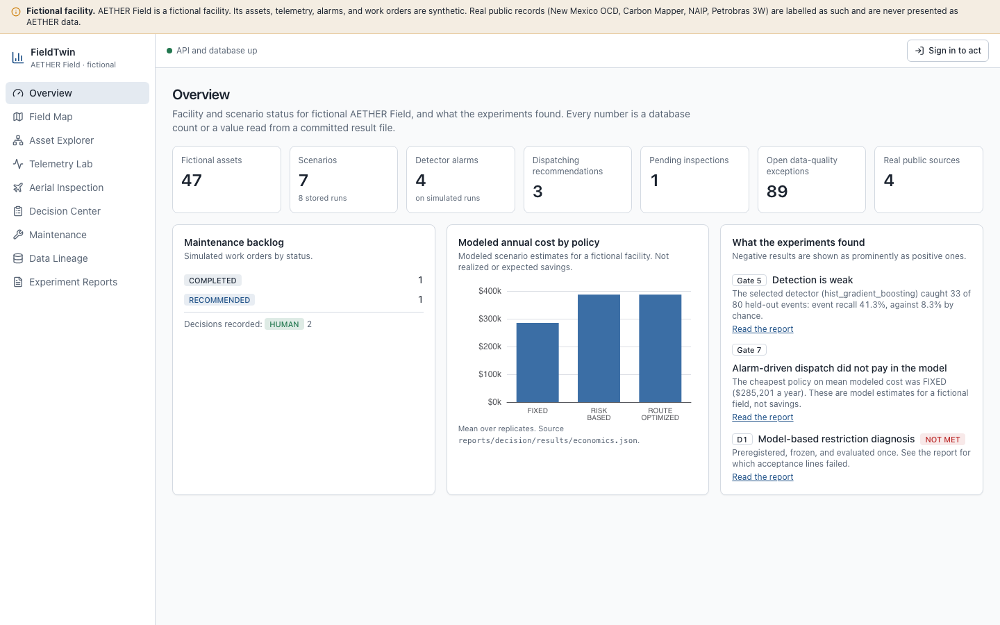

A working operations app
FastAPI over PostGIS and a React dashboard with nine screens. These are screenshots of the real app running on the demo database. Every number on screen comes from a query or a committed result file.










How it works
Real data and fictional data flow side by side and never mix. Separate tables, separate maps, and a provenance class on every row, checked by the database.
Real data, kept honest
Streaming acquisition of a 975 MB production archive, immutable raw batches with SHA-256 manifests, quarantine with reasons, and cross-source reconciliation where unknown stays unknown.
A field that obeys physics
A coupled solver for wells, flowlines, gathering lines, and compressors. Six deterministic scenarios whose hashes match on Linux x86, Linux ARM, and macOS in CI.
Built to be trusted
A least-privilege database role, bearer-token roles, idempotent writes, correlation IDs, structured errors, and loading, empty, error, and degraded states on every screen.
Results, including the ones that didn't work
Hold-outs were opened once. Where a rule changed after a result was seen, the report says so. The last milestone was preregistered and frozen before its final cases existed, and it failed. These figures are generated from the committed result files.
D1 held-out regimes
| Regime | Top-1 | 80% interval coverage, severity / impact | Verdict |
|---|---|---|---|
| Unseen pipes | 0.971 | 0.735 / 0.706 | Pass |
| High sensor noise | 1.000 | 0.824 / 0.853 | Pass |
| Deliverability outside training | 0.971 | 0.824 / 0.853 | Pass |
| Extreme severity | 1.000 | 0.529 / 0.500 | Overconfident |
| Compressor outside range | 1.000 | 0.882 / 0.029 | Impact wrong |
| Degraded operations | 0.412 | 0.441 / 0.588 | Can't see the fault |
Full tables and source hashes: evaluation summary · D1 final report · known limitations.
Engineering rigour you can check
The integrity rules live where they can't be bypassed, and the evidence for each claim is in the repository.
- The database enforces the evidence. A synthetic reading without a complete chain to its sensor, asset, run, and parameters is refused. History is append-only.
- Even a broken API can't forge an approval. Allowed transitions, the supervisor role, and "no status change without an audit event" are triggers, tested by attempting to bypass each one.
- Human and scripted decisions are kept apart.
HUMAN,SCRIPTED_DEMO, andSYSTEMare stored per transition and shown on screen. - Nothing is substituted. A failed download or an unbuilt result is reported as such, never filled with stand-in data.
- Preregistration with teeth. D1's method was frozen by a checksum guard over 43 files, and its final runs went through an append-only attempt ledger that refuses a second try.
- Reproducible from nothing. One script rebuilds the system in a clean copy, retrains the detector, checks its hash against the committed results, and smoke-tests the app.
- Security checked, not asserted. Bandit findings triaged, gitleaks, pip-audit, and npm audit clean, SQL-injection and path-traversal tests, and a critical frontend advisory fixed. Review
- Mistakes are disclosed. Every report has a disclosures section, including the overclaims caught in review and how they were corrected.
Run it yourself
You need uv, Node, and Docker. There are no accounts, keys, or cloud.
# from a clean checkout to the app on http://127.0.0.1:8000 git clone https://github.com/abh2050/fieldtwin.git && cd fieldtwin bash scripts/run_demo.sh # prove there are no hidden steps: rebuild in a clean copy and smoke-test it bash scripts/clean_copy_demo.sh
Then sign in as an operator, open a work order from a recommendation, and approve it as a supervisor. The walkthrough has every step.
How it was built
Gate by gate. Each gate had a branch, a pull request, an external review, and an evidence rebuild from an empty database.
Read further
Technical overview →
Layers, design rules, quality gates, and the ADRs that shape the system.
Evaluation summary →
Every result table, generated from the committed result files with their hashes.
Walkthrough →
From a clean checkout to an approved simulated work order.
Security review →
Threat model, controls with evidence, and findings.
Known limitations →
Everything this project does not show.
Hardening roadmap →
What it would take to run on a real field.
Costs and teardown →
Measured compute, CI minutes, and disk; zero cloud and paid-API spend.
Architecture diagrams →
Editable draw.io file with the system, runtime, network, and evaluation pages.
Specification →
The original brief, with dated notes where the scope changed.